Leading suppliers from product definition through production readiness.
I am comfortable working directly with Tier manufacturers at both the program and process level—defining requirements, tracking technical risk, cost and timing, communicating status and tradeoffs internally, and working hands-on with supplier teams until the physical product meets specification and is ready to launch.
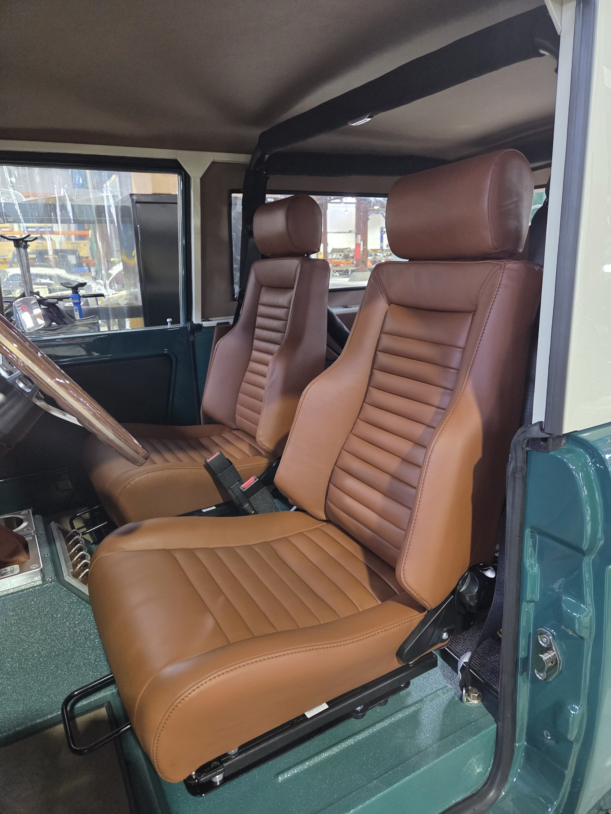
Replacing a critical seating path without losing the launch window.
When the incumbent front-seat path became unavailable, I proposed consolidating front and rear seating with Cobra UK. The challenge extended beyond sourcing a replacement: the new system had to preserve Kindred’s design intent, integrate vehicle-specific requirements, control cost, close technical risk, and reach repeatable production within a compressed schedule.

Product
Visual intent, materials, pleat architecture, seam construction, heating, fit and quality.
Supplier
Capability, equipment, patterns, first articles, process discipline and corrective action.
Program
Priority, development lift, cost impact, schedule risk, fallback paths and release timing.
Organization
Recurring supplier syncs, internal status, decisions, escalation and cross-functional alignment.
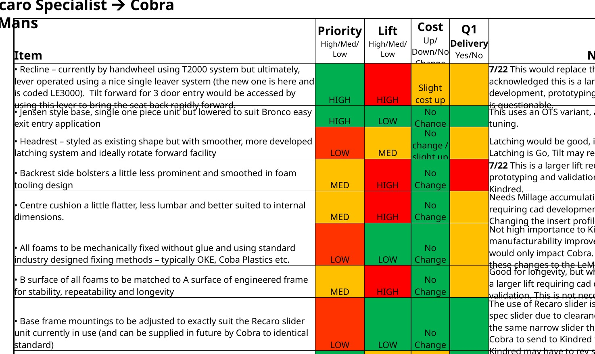
Working development path used to communicate tradeoffs and identify which changes were essential for launch versus longer-term supplier improvements.
Turn design intent into controlled manufacturing requirements.
Supplier development only works when the target is explicit. I translated the seating direction into pleat architecture, seam construction, technical sewing requirements, material expectations, configuration notes and controlled drawings that could be used to build, inspect and revise the product consistently.
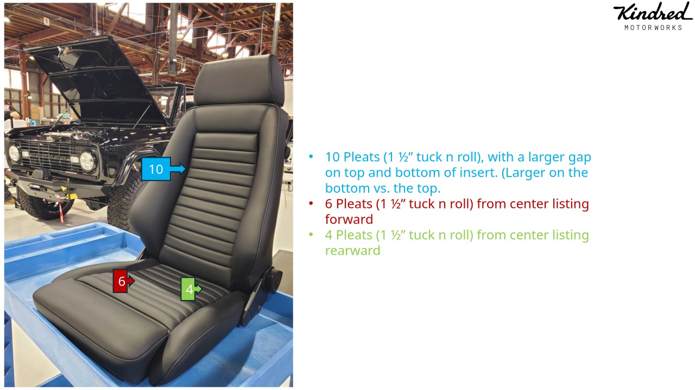
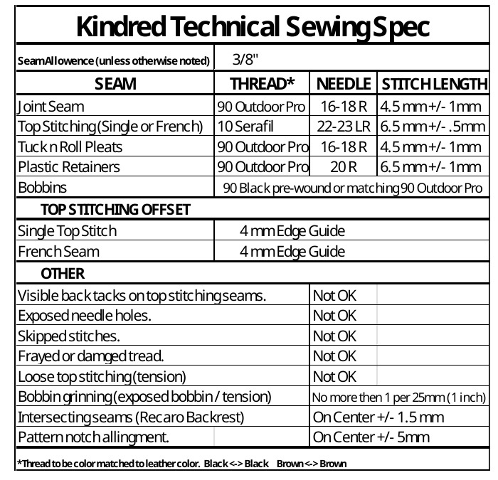
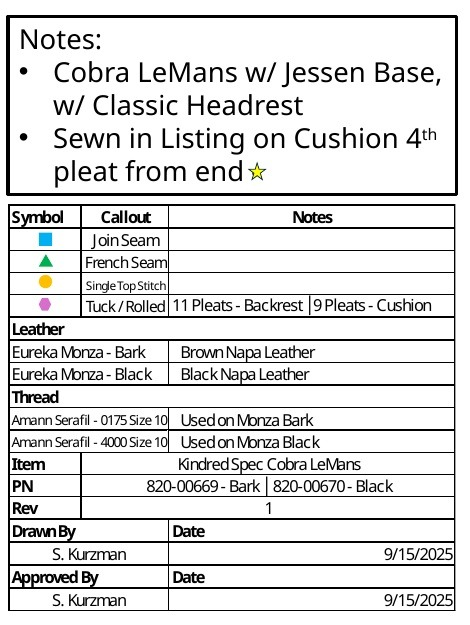

Understand the manufacturing system before asking it to change.
The onsite review included Cobra’s production equipment, fabrication and trim processes, pattern control, build stations and available engineering support. That capability assessment informed what could be corrected immediately, what required deeper development, and how to structure the supplier path toward repeatable output.


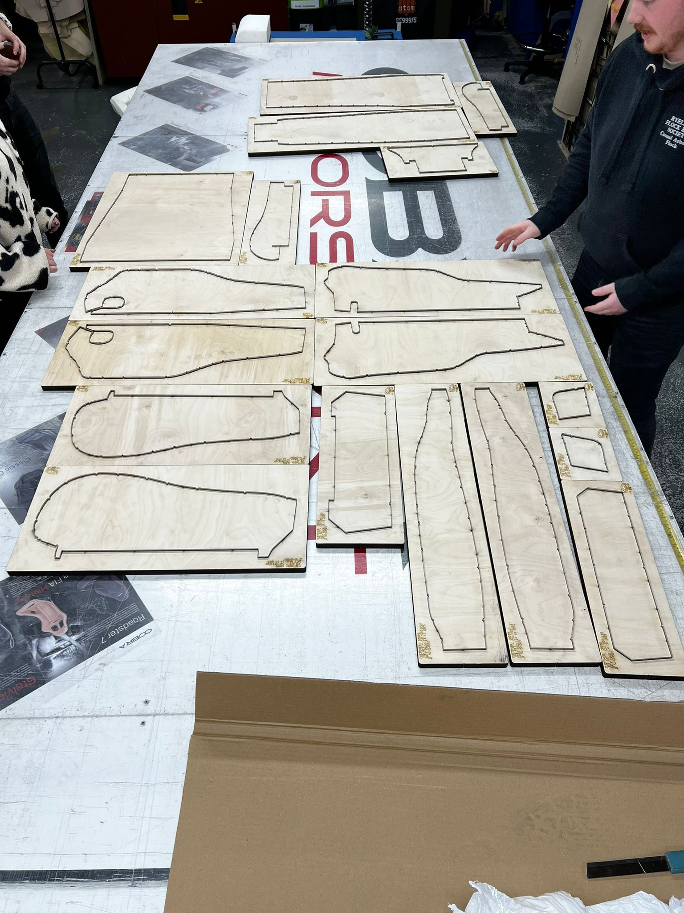
Manufacturing context. Automatic cutting, sewing equipment, physical patterns/dies, fabrication and build processes were evaluated as part of the supplier-development path.

Move from subjective feedback to process-level correction.
The first articles were not yet production-ready. Rather than treating the issues as isolated cosmetic defects, I worked directly with the Cobra team to identify how material behavior, sewing setup, pattern geometry, retention and assembly sequence were creating variation—and then changed the underlying process.


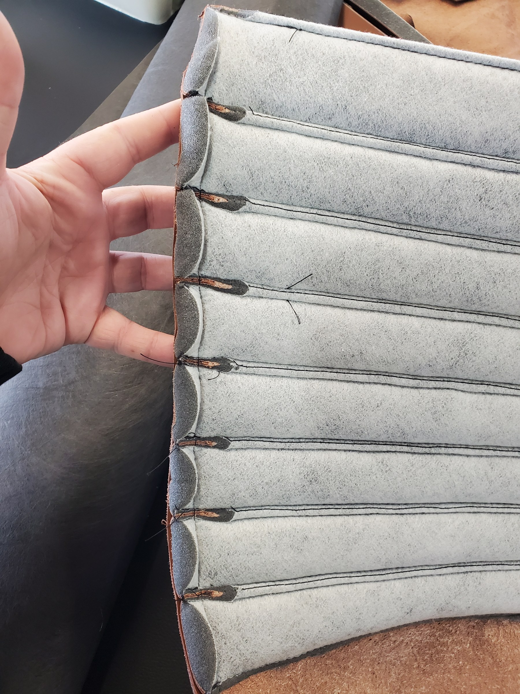

Foam mass + surface control
Trained trimming techniques around pleats and joining seams, then adjusted stitch count to support a flatter, more unified appearance.
Wrinkling near seams
Removed a perimeter-sewing step that was restricting leather stretch and immediately improved the finished surface.
Thread tension
Changed needle size/type and trained the team on tension for the specified thread size.
Heater + installation routing
Provided an installation guide and revised the LeMans patterns to J-to-J retention, removing staples around the wiring path.
Classic GT retention
Changed the internal listing method to support rods and a more uniform, repeatable pull.
Legacy patterns
Handled major LeMans base tuning and worked directly with Cobra to update patterns before production stamping.
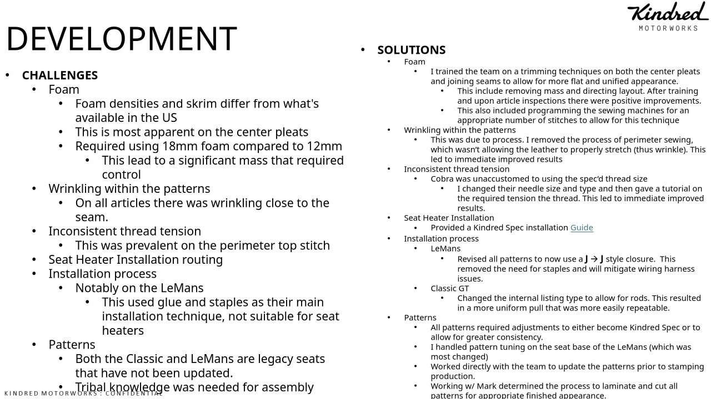
Original onsite recap documenting the observed challenges and corrective actions.
Production readiness is a decision, not an assumption.
The objective onsite was not to approve everything. It was to establish what had reached a repeatable state, what remained at risk, and what action was required next. I used article inspection, controlled quality criteria and recurring supplier follow-up to make that distinction explicit for both Cobra and the Kindred team.
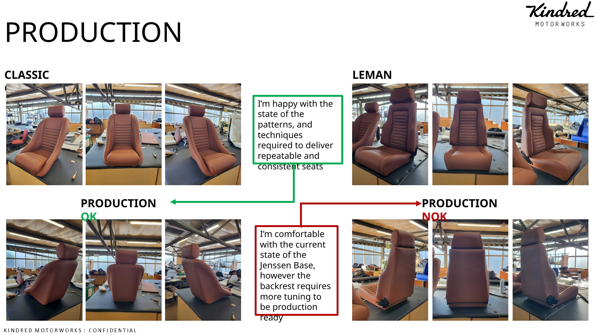
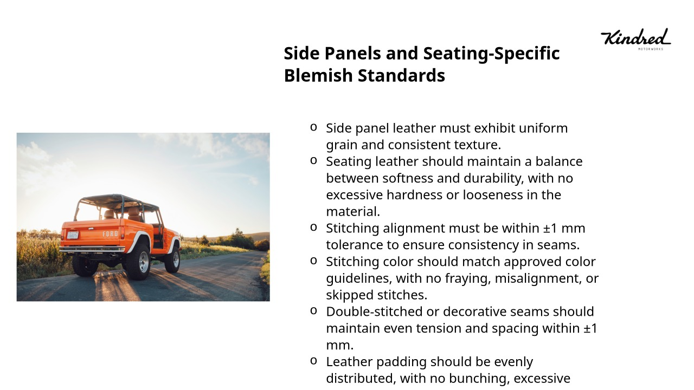
The result had to work beyond the first approved seat.
The final test of the supplier-development work was repeatability. Once the construction methods, patterns, sewing setup and quality expectations were controlled, Cobra could move from individual development articles into batch production while preserving the intended A-surface execution.
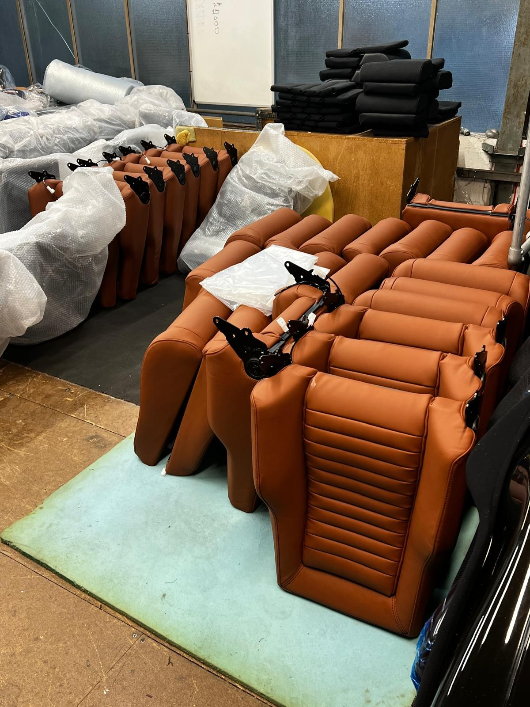
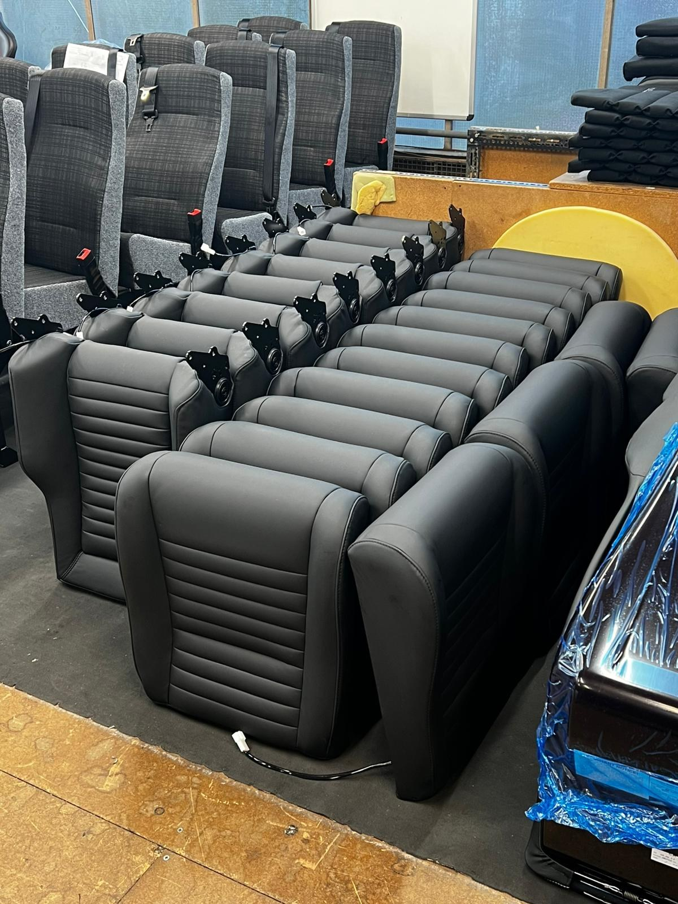

Vehicle-set production requirement under a compressed launch window.
Onsite UK development sprint for article inspection, pattern/process tuning and production decisions.
Lower delivered front-and-rear seating-package cost versus the incumbent approach—approximately $2,000 per vehicle.
The seats arrived on time and met the defined quality expectations. More importantly, the program demonstrated the supplier-development model I use broadly: define the product clearly, keep risk/cost/timing visible, work directly at the manufacturing process when needed, communicate tradeoffs internally, and hold production release to an evidence-based standard.